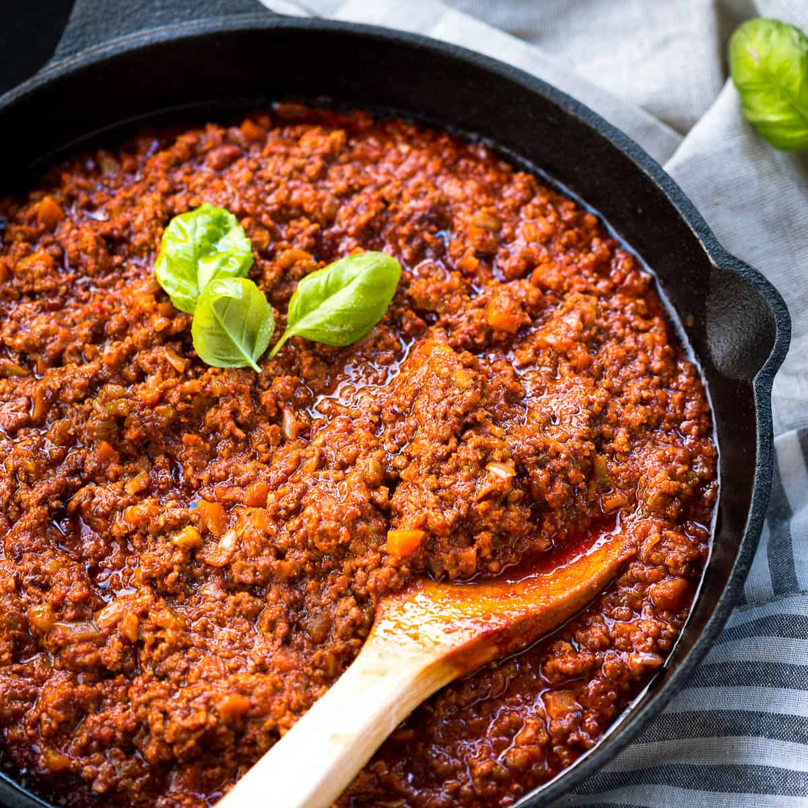

This is an image of ragú, also known as the classic Italian meat sauce.
Ingredients
- 2 tbsp. extra-virgin olive oil
- 2 medium onions
- 2 celery stalks
- 2 carrots
- 6 oz. ground beef
- 3 oz. thinly sliced pancetta, finely chopped
- 1/2 cup dry red wine
- 3 cups (about) beef stock or chicken stock, divided
- 3 tbsp. tomato paste
Steps
-
Heat oil in a large heavy pot over medium-high heat. Add onions, celery, and carrots. Sauté until soft, 8-10 minutes. Add beef, veal, and pancetta; sauté, breaking up with the back of a spoon, until browned, about 15 minutes. Add wine; boil 1 minute, stirring often and scraping up browned bits. Add 2 1/2 cups stock and tomato paste; stir to blend. Reduce heat to very low and gently simmer, stirring occasionally, until flavors meld, 1 1/2 hours. Season with salt and pepper.
-
Bring milk to a simmer in a small saucepan; gradually add to sauce. Cover sauce with lid slightly ajar and simmer over low heat, stirring occasionally, until milk is absorbed, about 45 minutes, adding more stock by 1/4-cupfuls to thin if needed.
-
DO AHEAD: Ragù can be made 2 days ahead. Chill uncovered until cold, then cover and keep chilled. Rewarm before continuing.
-
Bring a large pot of water to a boil. Season with salt; add pasta and cook, stirring occasionally, until 1 minute before al dente. Drain, reserving 1/2 cup pasta water. Transfer ragù to a large skillet over medium-high heat. Add pasta and toss to coat. Stir in some of the reserved pasta water by tablespoonfuls if sauce seems dry. Divide pasta among warm plates. Serve with Parmesan.